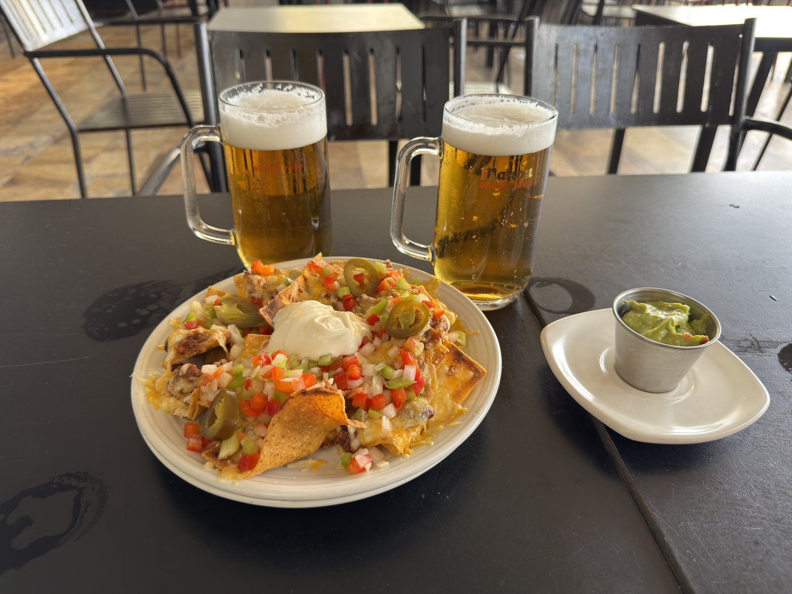
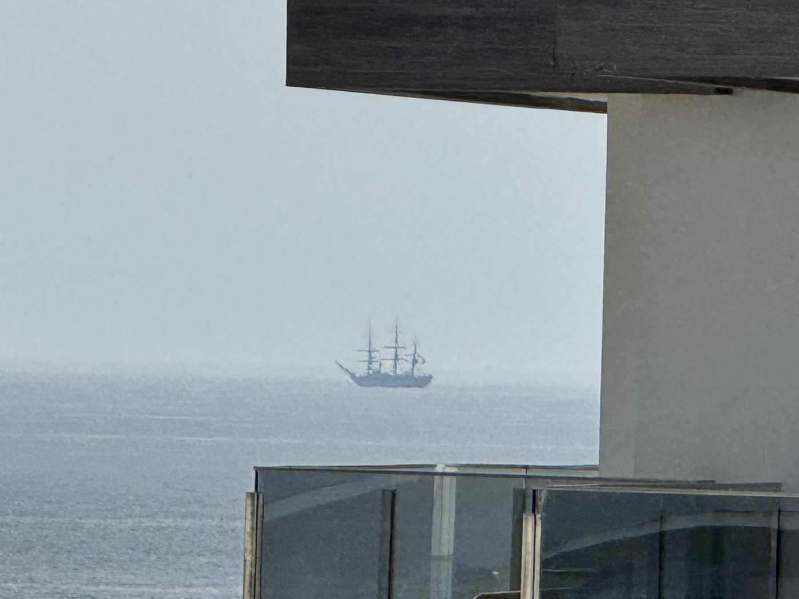
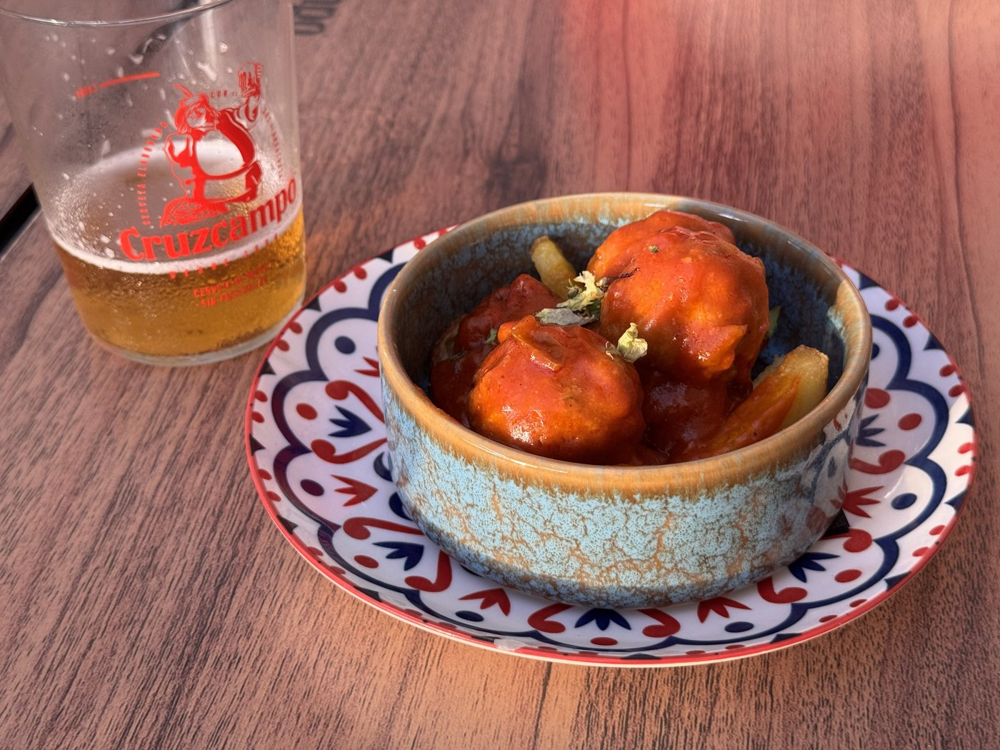

Heute haben wir mal gar nichts gemacht. Erweitertes Nichtstun.
Mittags waren wir kurz im Hollywood Fosters, anschließend im Supermarkt ein paar Getränke kaufen. Danach war Sonnen auf dem Balkon angesagt — kurz nur: als es anfing, nach gebratenem Speck zu riechen, bin ich doch lieber wieder reingegangen.

Dann, am späten Nachmittag, kam sie noch einmal vorbei: die Amerigo Vespucci auf ihrem Weg nach Cagliari. Gestern hatten wir noch an Deck gestanden — heute war sie fünf Seemeilen weit draußen.
Eine Seemeile sind 1.852 Meter — der Bogen, den eine Winkelminute auf einem Längengrad abdeckt. Fünf davon sind also gut neun Kilometer. Ohne lange Linse war da nix to mooken; die Bilder sind das Beste, was das Handy leisten konnte.

Ein Trost war es trotzdem. Ein Segelschulschiff unter Segeln sieht man nicht oft, und wir hatten sie ja am Tag zuvor aus nächster Nähe.
Abends sind wir dann doch noch kurz raus. Ein paar Meter am Strand in die andere Richtung gibt es eine ganz kleine Tapasbar — sehr lecker. Danach noch ein paar Schnappschüsse vom Hotel, und das war der Tag.
